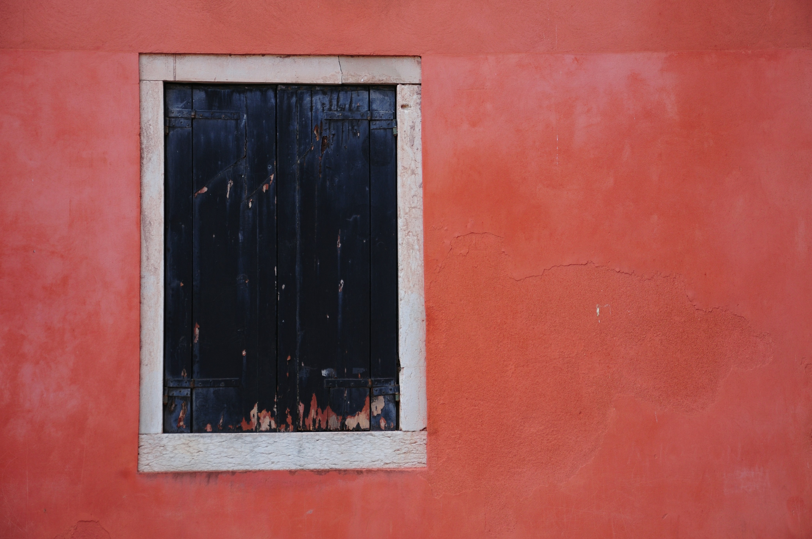

АУКЦИОН ВЕЩЕЙ В КОТОРЫЕ НИКТО НЕ ВЕРИЛ
ЛОТЫ

ФИЛЬМ РЕЖИССЕРА, КОТОРЫЙ БРОСИЛ КИНОШКОЛУ
Не просто бросил, а ушёл с первой лекции. Какой была бы ваша ставка, если бы вы не знали, что режисёр - Пол Томас Андерсон?

КНИГА, ГДЕ ОПИСАН ОДИН СКУЧНЫЙ ДЕНЬ ИЗ ЖИЗНИ РЕКЛАМНОГО АГЕНТА
Объёмом почти в тысячу страниц Иногда без знаков препинания и с переходами на древнеанглийский. В ней одновременно рассказывается о 16 июня 1994 года и об истории литературы, начиная с античных времен. И это всё накладывается на эпическую поэму Гомера. Сколько бы вы поставили на "Улисса" Джеймса Джойса?
КАРТИНА, КОТОРУЮ ПОВТОРИТ ДАЖЕ 5-ЛЕТНИЙ СЫН МАМИНОЙ ПОДРУГИ
Ну действительно, там линия, тут кружочек, а здесь и вовсе что-то похожее на инфухорию-туфельку. Никаких полей, лесов, котиков... Сколько бы вы на такое поставили, если бы вы не знали, что это - одна из революционных работ Кандинского?
посмотреть больше